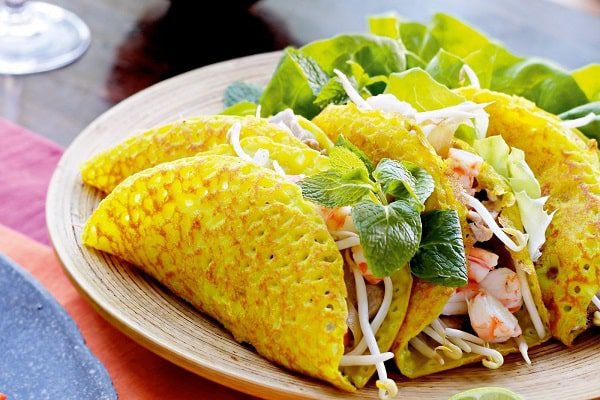
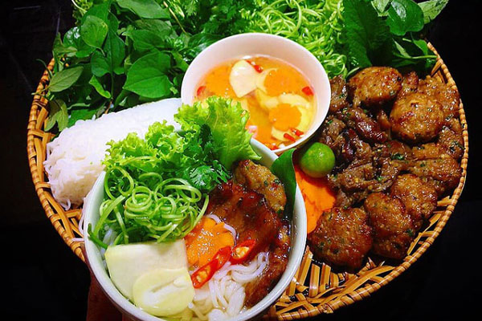
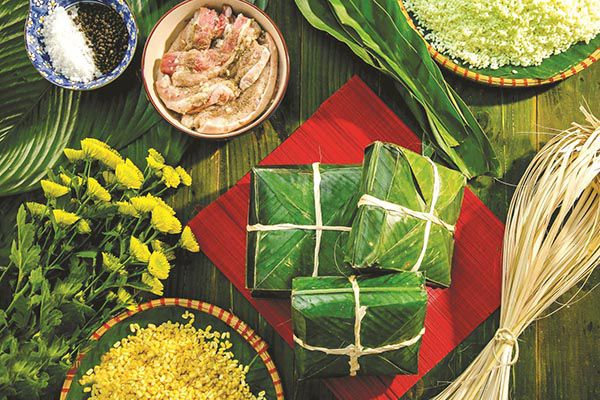
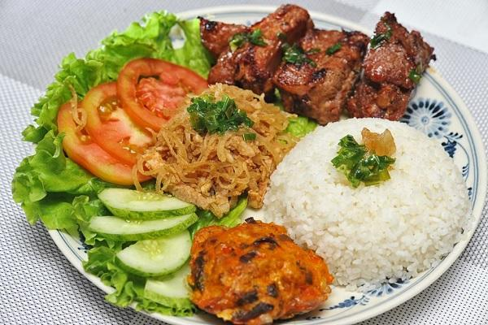

Bánh Xèo
Bánh xèo là món ăn thường được ăn và bán phổ biến hơn vào mùa mưa. Bởi lẽ vì sự giòn rụm, nóng hổi được vớt từ trong khuôn ra, ăn ngay tại chỗ, dễ khiến cho người ta cảm thấy ấm bụng.

Bún Chả
Bún chả là một món ăn của Việt Nam, bao gồm bún, chả thịt lợn nướng trên than hoa và bát nước mắm chua cay mặn ngọt.

Gỏi Cuốn
Gỏi cuốn có xuất xứ từ Miền nam Việt Nam với tên gọi là gỏi cuốn - bằng các nguyên liệu gồm rau xà lách, húng quế, tía tô, tôm khô, rau thơm, thịt luộc, tôm tươi..

Bún Bò Huế
Bún bò Huế là một đặc sản của ẩm thực Huế, tùy là bún bò nhưng ngoài thịt bò còn có thịt heo. Hương vị đặc biệt của món ăn này chủ yếu là ở vị cay nồng, mùi sả đặc trưng của nước lèo. ...

Bánh Chưng
Bánh chưng là một loại bánh truyền thống của dân tộc Việt nhằm thể hiện lòng biết ơn của con cháu đối với cha ông với đất trời. Nguyên liệu làm bánh chưng gồm gạo nếp, đậu xanh, thịt lợn, lá dong.

Cơm Tắm
Cơm tấm là món ăn đặc sản của người dân miền Nam. Nó được ưa chuộng tại rất nhiều vùng miền, đặc biệt là Sài Gòn. ... Cơm tấm được làm từ hạt tấm, trứng ốp la, chả trứng, lạp xưởng.